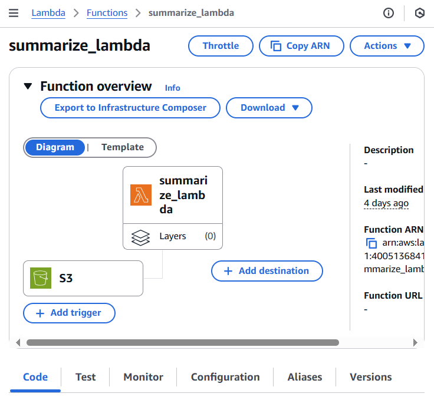

Medical Calls Analysis in AWS (Part 3) - Smart Summarization with Amazon Bedrock
Published: May 5, 2024 Updated: May 17, 2025
Github Repo: https://github.com/pedropcamellon/medical-calls-analysis-aws
Introduction
In the previous article, I showed how I used Amazon Transcribe to obtain transcribed JSON files from audio recordings. In this part, I wanted to take those transcripts and automatically summarize them using the Titan model on Amazon Bedrock. This was my first deep dive into using large language models through AWS, and I learned a lot about how to transform lengthy conversations into concise, actionable summaries.
One of the key skills I developed was understanding how Amazon Bedrock provides secure access to leading AI foundation models through a single API—making it much easier than I expected to integrate LLMs into my application. While I focused on medical applications for this project, I realized this approach could work for any industry dealing with communication and information exchange.
I decided to combine AWS Lambda for serverless computing with Amazon Bedrock’s language models. This taught me how to build event-driven architectures that can process and analyze conversations at scale. The most interesting part was setting up S3 triggers to automatically initiate processing when new audio files are uploaded—creating a fully automated workflow that runs without any manual intervention.
Creating My S3 Bucket
The first thing I needed was a storage bucket for my audio files and generated outputs. I logged into the AWS Management Console and navigated to S3. Creating the bucket was straightforward—I clicked “Create bucket,” entered a unique name, and selected my preferred region (us-east-1). I left most settings at their defaults for this project, though in a production environment I’d definitely revisit security and versioning settings. This was good practice in understanding S3 bucket configuration and regional considerations for data storage.
Setting Up IAM Permissions for Transcribe
One of the most important lessons I learned was about AWS IAM (Identity and Access Management) and the principle of least privilege. To allow Amazon Transcribe to access my audio files automatically, I had to create an IAM role with specific permissions. This taught me how to scope permissions correctly—giving just enough access to do the job without over-permissioning:
{
"Version": "2012-10-17",
"Statement": [
{
"Effect": "Allow",
"Action": ["s3:GetObject", "s3:PutObject"],
"Resource": ["arn:aws:s3:::medical-calls-audio-bucket/*"]
}
]
}
Building the Summarization Lambda Function
With my audio files and transcripts in S3, the next challenge was creating a Lambda function to summarize the content using Amazon Bedrock. This was where I really started to understand serverless architecture and event-driven design patterns. The function I built processes JSON transcripts and generates summaries using a Large Language Model.
Here’s the workflow I designed:
- A new transcript JSON file appears in the S3 ‘transcripts’ folder
- This triggers our summarization Lambda function
- The function retrieves and processes the transcript
- It sends the processed text to Amazon Bedrock
- Bedrock analyzes the content and generates a summary
- The summary is saved back to S3 in a ‘summaries’ folder
This automated approach was a major learning point for me—understanding how to chain AWS services together in an event-driven architecture. I had to think through error handling, logging, and making sure the function was idempotent (so it wouldn’t break if triggered multiple times).
The Lambda function I wrote handles the entire workflow: reading the JSON transcript, formatting the content for the LLM, making the API call to Bedrock, and storing the results. I made sure to include comprehensive error handling and logging—skills that proved crucial when debugging issues during development.
import boto3
import json
def lambda_handler(event, context):
bucket = event["Records"][0]["s3"]["bucket"]["name"]
key = event["Records"][0]["s3"]["object"]["key"]
print(f"Processing file {key} from bucket {bucket}.")
# One of a few different checks to ensure we don't end up in a recursive loop.
if ".json" not in key:
print("This demo only works with transcription JSON files.")
return {
"statusCode": 400,
"body": json.dumps("This demo only works with transcription JSON files."),
}
# Create a Boto3 client for the S3 service
s3_client = boto3.client("s3", region_name="us-east-1")
bedrock_client = boto3.client("bedrock-runtime", region_name="us-east-1")
try:
response = s3_client.get_object(Bucket=bucket, Key=key)
file_content = response["Body"].read().decode("utf-8")
transcript = extract_transcript_from_textract(file_content)
print(f"Successfully read file {key} from bucket {bucket}.")
print(f"Transcript: {transcript}")
summary = bedrock_summarisation(transcript, bedrock_client)
print(f"Summary: {summary}")
filename = (
key.split("/")[-1]
.replace("transcription-job", "summarization-job")
.replace(".json", ".txt")
)
# Create the summary key with proper path
summary_key = f"summaries/{filename}"
s3_client.put_object(
Bucket=bucket, Key=summary_key, Body=summary, ContentType="text/plain"
)
print(f"Summary file {summary_key} created in bucket {bucket}.")
except Exception as e:
print(f"Error occurred: {e}")
return {"statusCode": 500, "body": json.dumps(f"Error occurred: {e}")}
return {
"statusCode": 200,
"body": json.dumps(
f"Successfully summarized {key} from bucket {bucket}. Summary: {summary}"
),
}
Parsing the Transcript: Understanding AWS Service Outputs
One skill I developed was learning to work with AWS service outputs. The transcript service generates detailed JSON with every spoken word and punctuation mark. I had to write an extraction function that streamlines this data—parsing the text, matching speaker segments, and formatting everything properly. Here’s what I learned about the JSON structure:
- jobName: A unique identifier for the transcription job (e.g., “transcription-job-abc78294-bfb4-4f22-ad8a-d3b26d5329cd”)
- status: The current state of the transcription job (e.g., “COMPLETED”)
- results.transcripts: Contains the full text transcript as a single string
- speaker_labels.segments: Information about who is speaking and when
- start_time/end_time: Timestamps showing when each segment was spoken
{
"jobName": "transcription-job-abc78294-bfb4-4f22-ad8a-d3b26d5329cd",
"accountId": "400513684195",
"status": "COMPLETED",
"results": {
"transcripts": [
{
"transcript": "Good morning, Dr Hayes's office. Tarn speaking. Hi, good morning. This is Ernesto Sanchez. The doctor told me I need to come in today for my heart, but I forgot to make an appointment and I don't have it right. Anyway. Ok, Mr Sanchez, what is your date of birth? 03 2576. And when were you last seen last week in the hospital? Can you hold for?"
}
],
"speaker_labels": {
"segments": [
{
"start_time": "0.689",
"end_time": "3.74",
"speaker_label": "spk_0",
"items": [
{
"speaker_label": "spk_0",
"start_time": "0.699",
"end_time": "0.97"
},
{
"speaker_label": "spk_0",
"start_time": "0.98",
"end_time": "1.379"
},
...
I wrote the extract_transcript_from_textract function to transform this raw JSON into something human-readable. The challenge was processing the transcript word by word while organizing everything by speaker and maintaining proper formatting. I had to handle edge cases like punctuation (removing trailing spaces) and speaker transitions. This taught me a lot about data transformation and the importance of clean, structured output when feeding data to AI models.
def extract_transcript_from_textract(file_content):
transcript_json = json.loads(file_content)
output_text = ""
current_speaker = None
items = transcript_json["results"]["items"]
# Iterate through the content word by word:
for item in items:
speaker_label = item.get("speaker_label", None)
content = item["alternatives"][0]["content"]
# Start the line with the speaker label:
if speaker_label is not None and speaker_label != current_speaker:
current_speaker = speaker_label
output_text += f"\n{current_speaker}: "
# Add the speech content:
if item["type"] == "punctuation":
output_text = output_text.rstrip() # Remove the last space
output_text += f"{content} "
return output_text
After running my parsing function, I got much cleaner output. Each speaker’s dialogue was clearly labeled and separated, making it easy to see the conversation flow:
spk_0: Good morning, Dr Hayes's office. Tarn speaking. Hi,
spk_1: good morning. This is Ernesto Sanchez. The doctor told...
spk_0: Ok, Mr Sanchez, what is your date of birth?
spk_1: 03 2576. And when were you
spk_0: last seen last
spk_1: week in the hospital?
spk_0: Can you hold for?
Integrating Amazon Bedrock for Summarization
This was the exciting part—actually working with a large language model through AWS! To interact with Bedrock, I needed to set up a Bedrock runtime client. I created an instance pointing to us-east-1:
bedrock_runtime = boto3.client('bedrock-runtime', region_name='us-east-1')
I created the bedrock_summarisation function to handle the actual AI interaction. This is where I learned about prompt engineering—wrapping the transcript in XML-like tags and crafting prompts that request specific output formatting (including sentiment analysis and issue identification). I also had to understand model parameters like token limits (maxTokenCount: 2048) and temperature settings (I set it to 0 for more deterministic output). The function sends the request through the Bedrock client, extracts the summary from the JSON response, and returns the content.
def bedrock_summarisation(transcript, bedrock_client):
"""
Summarizes a conversation transcript using Amazon Bedrock.
This function reads a prompt template from a file, fills it with the provided
transcript and predefined topics, and sends it to the Amazon Bedrock model for
text generation. The function then retrieves and returns the generated summary
text.
:param transcript: The conversation transcript to be summarized.
:param bedrock_client: A client for invoking the Amazon Bedrock text generation model.
:return: A summary of the conversation generated by the Bedrock model.
"""
print("Starting Bedrock summarization...")
prompt = f"""I need to summarize a conversation. The transcript of the
...
"""
kwargs = {
"modelId": "amazon.titan-text-express-v1",
"contentType": "application/json",
"accept": "*/*",
"body": json.dumps(
{
"inputText": prompt,
"textGenerationConfig": {
"maxTokenCount": 2048,
"stopSequences": [],
"temperature": 0,
"topP": 0.9,
},
}
),
}
response = bedrock_client.invoke_model(**kwargs)
summary = (
json.loads(response.get("body").read()).get("results")[0].get("outputText")
)
return summary
Through trial and error, I learned several prompt engineering techniques that made a huge difference. First, I used XML-like tags () to clearly separate instructions from content—this helped the model understand what to process. Second, I provided explicit output formatting through a JSON schema, which constrained responses to the structure I needed. Third, I used categorical constraints (like ["charges"|"location"|"availability"]) to limit the topic field. Finally, I broke down the analysis into components (sentiment and issues), making the task manageable. These were valuable lessons in how to effectively communicate with LLMs.
prompt = f"""I need to summarize a conversation. The transcript of the
conversation is between the <data> XML like tags.
<data>
{transcript}
</data>
The summary must contain a one word sentiment analysis, and
a list of issues, problems or causes of friction
during the conversation.
The output must be provided in JSON format using the following fields:
- "sentiment": <sentiment>,
- "issues": [
- "topic": ["charges"|"location"|"availability"]
- "summary": [issue_summary]
]
"""
Deploying the Lambda Function
With my code ready, I created a new Lambda function called summarize_lambda through the AWS Console. At this point, I was getting more comfortable with the Lambda deployment process and understanding how to structure serverless functions.

Before testing, I learned another important IAM lesson—Lambda functions need explicit permissions to access other AWS services. I had to update the IAM role to allow interaction with Bedrock. Specifically, I needed:
- “bedrock:InvokeModel” - To actually run inference using Bedrock’s AI models
- “bedrock:ListModels” - To retrieve information about available models
I added these permissions to the IAM role policy:
{
"Effect": "Allow",
"Action": [
"bedrock:InvokeModel",
"bedrock:ListModels"
],
"Resource": "*"
},
Learning About Lambda Timeouts
Here’s where I hit my first real debugging challenge. The default Lambda timeout is 3 seconds, but Bedrock’s LLM can take much longer to process and return a response. My function kept timing out! This taught me an important lesson about Lambda configuration—I needed to adjust both timeout and memory settings. Here’s what I did:
- Went to the AWS Lambda console
- Selected my function
- Navigated to “Configuration” → “General configuration”
- Clicked “Edit”
- Increased timeout to 30 seconds
- Increased memory to 256 MB
- Saved the changes
After adjusting these settings, my function ran successfully! This also taught me the importance of monitoring CloudWatch logs to understand execution behavior and troubleshoot issues.

Configuring Event-Driven Architecture with S3
This was one of the coolest parts—setting up truly automated, event-driven processing. I configured S3 to trigger my Lambda function whenever a new transcript appeared. This taught me how to build systems that respond to events without any manual intervention. Here’s how I set it up:
- Navigated to my S3 bucket’s “Properties” tab
- Found “Event Notifications” and clicked “Create event notification”
- Configured the event:
- Event name: “TranscriptFileTrigger”
- Prefix: “transcripts/” (to only trigger on files in this folder)
- Suffix: “.json” (to avoid triggering on non-JSON files)
- Event types: “All object create events”
- Set destination to my Lambda function
- Saved the changes
This taught me how to use prefixes and suffixes to control exactly when functions trigger—preventing recursive loops and unnecessary invocations.

Once configured, I could see the trigger listed in my Lambda function’s configuration. The connection was established, and my automated workflow was ready to run.

Testing the Complete Workflow
Time to test everything end-to-end! I uploaded an audio file to my S3 bucket:
- Opened the S3 console
- Navigated to my bucket
- Clicked “Upload”
- Dropped in phone_call.mp3
- Clicked “Upload”
The moment the file appeared in my bucket, the event notification triggered my Lambda function automatically. Watching the entire workflow execute on its own—transcription generating a JSON file, which then triggered the summarization Lambda, which created a summary file—was incredibly satisfying. This is when the power of event-driven architecture really clicked for me.


What I Learned in This Part
In this part of the series, I developed several new AWS skills that built on what I learned in the previous articles:
- Event-Driven Architecture: How to chain AWS services together using S3 triggers and Lambda functions to create fully automated workflows
- IAM and Security: Understanding least-privilege access, creating proper IAM roles, and scoping permissions correctly
- Serverless Computing: Lambda configuration, timeout management, memory allocation, and CloudWatch logging for debugging
- Working with AI Services: Integrating Amazon Bedrock, understanding model parameters, and learning prompt engineering techniques
- Data Transformation: Parsing AWS service outputs and preparing data for AI model consumption
- AWS Service Integration: Connecting S3, Lambda, Transcribe, and Bedrock into a cohesive system
These skills complemented what I learned about audio transcription in the earlier parts of this series. In the next article, I’ll share what I learned about monitoring system performance with CloudWatch, tracking usage patterns, and implementing safeguards for LLM responses.